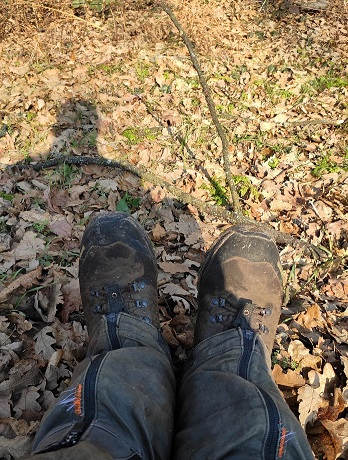
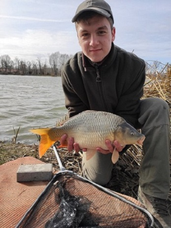
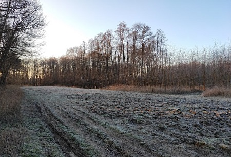
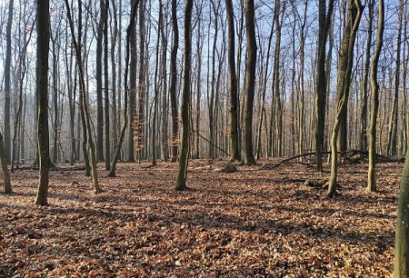
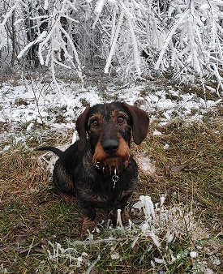

bemutatkozás
munkáim
hobbim
kapcsolat
Hobbim a természet, ha lehet így fogalmazni.
Imádok minden percet a természetben tölteni, akár túrázással, akár horgászattal.
Íme néhány emlékezetes képem az idei évből.
 
 
Hű társam, Drazsé, aki mindenhova elkísér:
